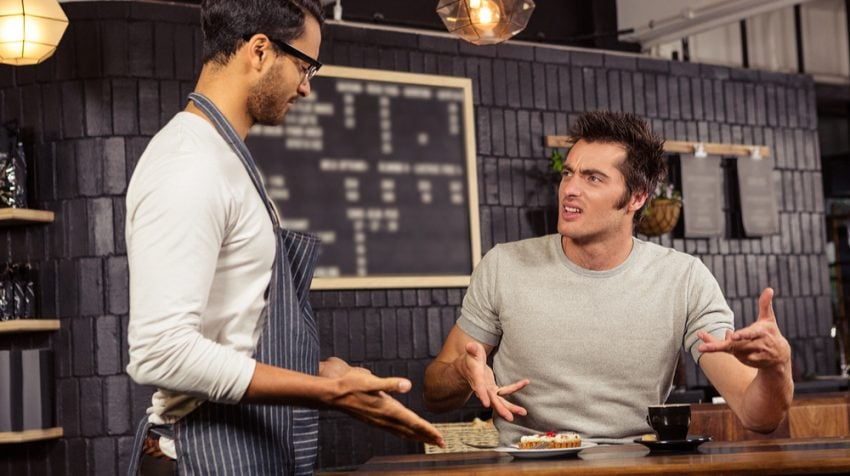
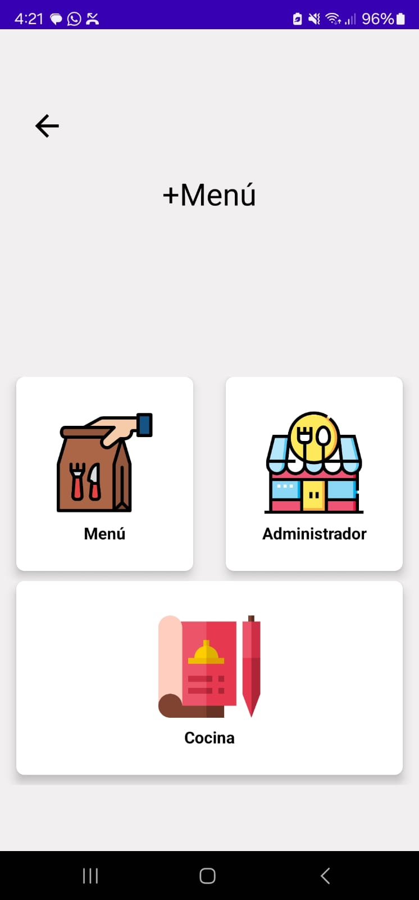
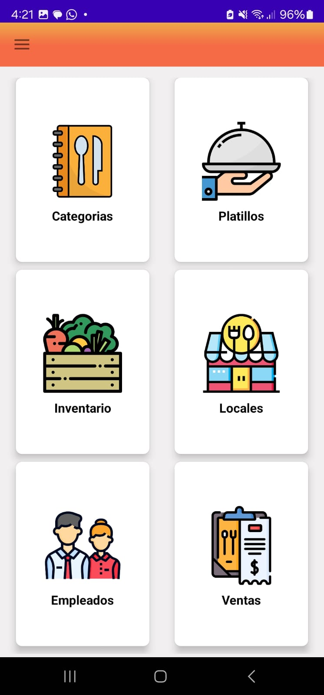
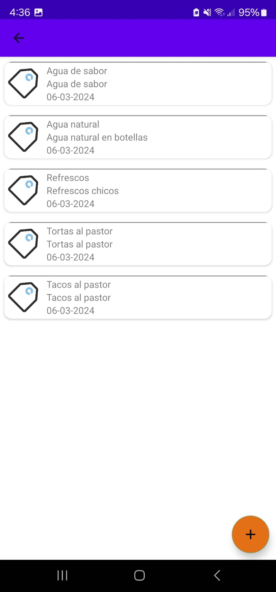
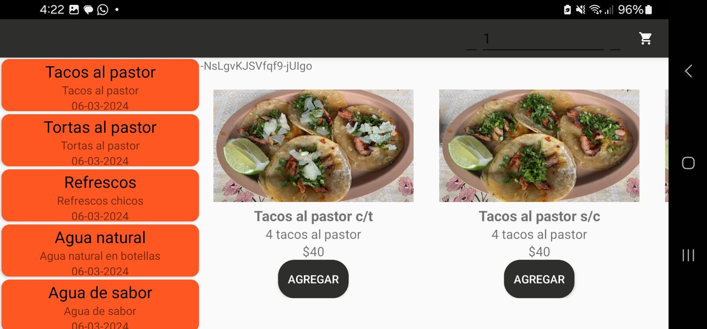
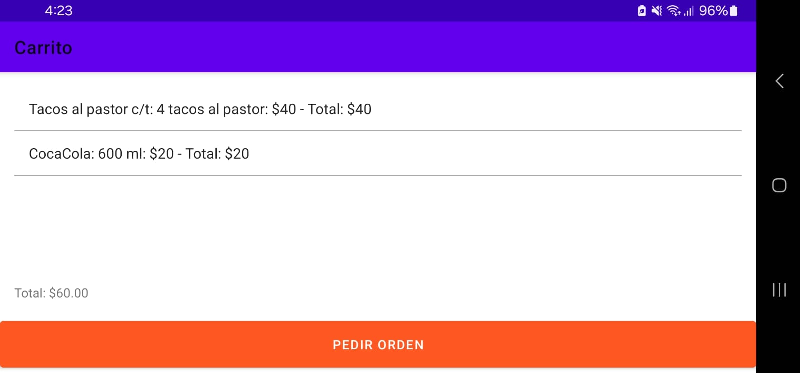

“Más del 50% de los consumidores han abandonado una compra planificada debido a un mal servicio” (American Express, 2017), ya sea por las largas esperas para ser atendidos o errores en la orden. Los softwares hechas para estas gestiones son opciones demasiado caras, limitadas y con pocas características que permiten la interacción del cliente. La cámara de diputados en 2017 estableció que México ocupa uno de los primeros lugares en tasas de deforestación en el mundo. Pocos toman conciencia de la cantidad de tickets impresos a diario y que sólo son útiles durante pocos minutos para terminar en la basura o tirados en alguna parte.
|  |
+Menú es una aplicación móvil donde el comensal tendrá interacción directa con el software sin intermediarios al ser usada en el establecimiento para la reducción de tiempos de espera y encontrará información de los platillos del menú, así como también podrá realizar la orden directamente ahí en cualquier momento que el lo desee y se le generará su ticket de forma digital en pantalla. Para el administrador del negocio se permite crear su menú digital, gestión de mesas ,modificación de inventario y registrar ventas.
Cuenta con las siguientes caracteristicas escenciales para un restaurante:
Dirigido a los propietarios o gerentes de negocios de comida, incluyendo restaurantes, bares, establecimientos de comida rápida y otros negocios de ese giro que necesitan una solución para agilizar sus procesos y obtener mejores resultados en servicio y atención al cliente.
+Menú es una aplicación móvil para la gestión de comandas en restaurantes, promete ser la más completa y con planes de pago accesibles para que todos los negocios dedicados a este giro puedan contratarla e implementarla.
|  |  |  |
|  |  |
"+Menú ha revolucionado la forma en que gestionamos nuestras comandas. ¡Altamente recomendado!"
- Ernesto Martínez, Restaurante Los Originales"Gracias a +Menú, ahora podemos atender a nuestros clientes de manera más eficiente y rápida."
- Magda Maza, Restaurante El Mero Gallo